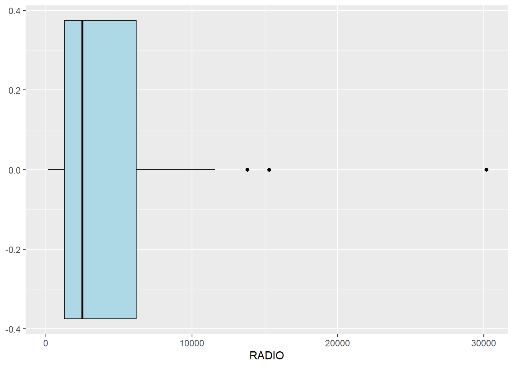

pacman::p_load(rgdal, spdep, tmap, sf,
ggpubr, cluster, factoextra, NbClust,
heatmaply, corrplot, psych, tidyverse)Hands-on_Ex05
5 Geographical Segmentation with Spatially Constrained Clustering Techniques
5.1 Overview
In this hands-on exercise, I will
delineate homogeneous region by using geographically referenced multivariate data
There are two major analysis, namely:
hierarchical cluster analysis; and
spatially constrained cluster analysis.
5.1.1 Learning Outcome
to convert GIS polygon data into R’s simple feature data.frame by using appropriate functions of sf package of R;
to convert simple feature data.frame into R’s SpatialPolygonDataFrame object by using appropriate sf of package of R;
to perform custer analysis by using hclust() of Base R;
to perform spatially constrained cluster analysis using skater() of Base R; and
to visualise the analysis output by using ggplot2 and tmap package.
5.2 Getting Started
5.2.1 The analytical question
In this hands-on exercise, we are interested to delineate Shan State, Myanmar into homogeneous regions by using multiple Information and Communication technology (ICT) measures, namely: Radio, Television, Land line phone, Mobile phone, Computer, and Internet at home.
5.3 The data
Two data sets will be used in this study. They are:
Myanmar Township Boundary Data (i.e. myanmar_township_boundaries) : This is a GIS data in ESRI shapefile format. It consists of township boundary information of Myanmar. The spatial data are captured in polygon features. <- geospatial data
Shan-ICT.csv: This is an extract of The 2014 Myanmar Population and Housing Census Myanmar at the township level. < aspatial data
Both data sets are download from Myanmar Information Management Unit (MIMU)
5.3.1 Installing and loading R packages
5.4 Data Import and Prepatation
5.4.1 Importing geospatial data into R environment
The Myanmar Township Boundary GIS data is in ESRI shapefile format. It will be imported into R environment by using the st_read() function of sf. Opening the .prj file in notepad reveals that it is in WGS 84 which has a crs code of 4326.
shan_sf <-st_read(dsn='data/geospatial',
layer='myanmar_township_boundaries')Reading layer `myanmar_township_boundaries' from data source
`C:\yixin-neo\ISSS624\Hands-on_Ex05\data\geospatial' using driver `ESRI Shapefile'
Simple feature collection with 330 features and 14 fields
Geometry type: MULTIPOLYGON
Dimension: XY
Bounding box: xmin: 92.17275 ymin: 9.671252 xmax: 101.1699 ymax: 28.54554
Geodetic CRS: WGS 84Check the states in Myanmar:
library(funModeling)Loading required package: HmiscLoading required package: latticeLoading required package: survivalLoading required package: Formula
Attaching package: 'Hmisc'The following objects are masked from 'package:dplyr':
src, summarizeThe following object is masked from 'package:psych':
describeThe following object is masked from 'package:plotly':
subplotThe following objects are masked from 'package:base':
format.pval, unitsfunModeling v.1.9.4 :)
Examples and tutorials at livebook.datascienceheroes.com
/ Now in Spanish: librovivodecienciadedatos.aifreq (data = shan_sf,
input = 'ST')Warning: `guides(<scale> = FALSE)` is deprecated. Please use `guides(<scale> =
"none")` instead.
ST frequency percentage cumulative_perc
1 Yangon 45 13.64 13.64
2 Sagaing 37 11.21 24.85
3 Mandalay 28 8.48 33.33
4 Ayeyarwady 26 7.88 41.21
5 Magway 25 7.58 48.79
6 Shan (North) 24 7.27 56.06
7 Shan (South) 21 6.36 62.42
8 Kachin 18 5.45 67.87
9 Rakhine 17 5.15 73.02
10 Bago (East) 14 4.24 77.26
11 Bago (West) 14 4.24 81.50
12 Mon 10 3.03 84.53
13 Shan (East) 10 3.03 87.56
14 Tanintharyi 10 3.03 90.59
15 Chin 9 2.73 93.32
16 Nay Pyi Taw 8 2.42 95.74
17 Kayah 7 2.12 97.86
18 Kayin 7 2.12 100.00dplyr::count(wp_nga, status_cle, sort = TRUE)Retrieve only the SHAN states
shan_sf <- shan_sf %>%
filter(ST %in% c("Shan (East)", "Shan (North)", "Shan (South)"))Checking after filtering, Reduced to only 55 Rows, exactly the same as the number of rows in excel ICT file.
shan_sfSimple feature collection with 55 features and 14 fields
Geometry type: MULTIPOLYGON
Dimension: XY
Bounding box: xmin: 96.15107 ymin: 19.29932 xmax: 101.1699 ymax: 24.15907
Geodetic CRS: WGS 84
First 10 features:
OBJECTID ST ST_PCODE DT DT_PCODE TS TS_PCODE
1 163 Shan (North) MMR015 Mongmit MMR015D008 Mongmit MMR015017
2 203 Shan (South) MMR014 Taunggyi MMR014D001 Pindaya MMR014006
3 240 Shan (South) MMR014 Taunggyi MMR014D001 Ywangan MMR014007
4 106 Shan (South) MMR014 Taunggyi MMR014D001 Pinlaung MMR014009
5 72 Shan (North) MMR015 Mongmit MMR015D008 Mabein MMR015018
6 40 Shan (South) MMR014 Taunggyi MMR014D001 Kalaw MMR014005
7 194 Shan (South) MMR014 Taunggyi MMR014D001 Pekon MMR014010
8 159 Shan (South) MMR014 Taunggyi MMR014D001 Lawksawk MMR014008
9 61 Shan (North) MMR015 Kyaukme MMR015D003 Nawnghkio MMR015013
10 124 Shan (North) MMR015 Kyaukme MMR015D003 Kyaukme MMR015012
ST_2 LABEL2 SELF_ADMIN ST_RG T_NAME_WIN T_NAME_M3
1 Shan State (North) Mongmit\n61072 <NA> State rdk;rdwf မိုးမိတ်
2 Shan State (South) Pindaya\n77769 Danu State yif;w, ပင်းတယ
3 Shan State (South) Ywangan\n76933 Danu State &GmiH ရွာငံ
4 Shan State (South) Pinlaung\n162537 Pa-O State yifavmif; ပင်လောင်း
5 Shan State (North) Mabein\n35718 <NA> State rbdrf; မဘိမ်း
6 Shan State (South) Kalaw\n163138 <NA> State uavm ကလော
7 Shan State (South) Pekon\n94226 <NA> State z,fcHk ဖယ်ခုံ
8 Shan State (South) Lawksawk <NA> State &yfapmuf ရပ်စောက်
9 Shan State (North) Nawnghkio\n128357 <NA> State aemifcsdK နောင်ချို
10 Shan State (North) Kyaukme\n172874 <NA> State ausmufrJ ကျောက်မဲ
AREA geometry
1 2703.611 MULTIPOLYGON (((96.96001 23...
2 629.025 MULTIPOLYGON (((96.7731 21....
3 2984.377 MULTIPOLYGON (((96.78483 21...
4 3396.963 MULTIPOLYGON (((96.49518 20...
5 5034.413 MULTIPOLYGON (((96.66306 24...
6 1456.624 MULTIPOLYGON (((96.49518 20...
7 2073.513 MULTIPOLYGON (((97.14738 19...
8 5145.659 MULTIPOLYGON (((96.94981 22...
9 3271.537 MULTIPOLYGON (((96.75648 22...
10 3920.869 MULTIPOLYGON (((96.95498 22...Notice that sf.data.frame is conformed to Hardy Wickham’s tidy framework.
Since shan_sf is conformed to tidy framework, we can also glimpse() to reveal the data type of it’s fields.
glimpse(shan_sf)Rows: 55
Columns: 15
$ OBJECTID <dbl> 163, 203, 240, 106, 72, 40, 194, 159, 61, 124, 71, 155, 101…
$ ST <chr> "Shan (North)", "Shan (South)", "Shan (South)", "Shan (Sout…
$ ST_PCODE <chr> "MMR015", "MMR014", "MMR014", "MMR014", "MMR015", "MMR014",…
$ DT <chr> "Mongmit", "Taunggyi", "Taunggyi", "Taunggyi", "Mongmit", "…
$ DT_PCODE <chr> "MMR015D008", "MMR014D001", "MMR014D001", "MMR014D001", "MM…
$ TS <chr> "Mongmit", "Pindaya", "Ywangan", "Pinlaung", "Mabein", "Kal…
$ TS_PCODE <chr> "MMR015017", "MMR014006", "MMR014007", "MMR014009", "MMR015…
$ ST_2 <chr> "Shan State (North)", "Shan State (South)", "Shan State (So…
$ LABEL2 <chr> "Mongmit\n61072", "Pindaya\n77769", "Ywangan\n76933", "Pinl…
$ SELF_ADMIN <chr> NA, "Danu", "Danu", "Pa-O", NA, NA, NA, NA, NA, NA, NA, NA,…
$ ST_RG <chr> "State", "State", "State", "State", "State", "State", "Stat…
$ T_NAME_WIN <chr> "rdk;rdwf", "yif;w,", "&GmiH", "yifavmif;", "rbdrf;", "uavm…
$ T_NAME_M3 <chr> "မိုးမိတ်", "ပင်းတယ", "ရွာငံ", "ပင်လောင်း", "မဘိမ်း", "ကလော", "ဖယ်ခုံ", "…
$ AREA <dbl> 2703.611, 629.025, 2984.377, 3396.963, 5034.413, 1456.624, …
$ geometry <MULTIPOLYGON [°]> MULTIPOLYGON (((96.96001 23..., MULTIPOLYGON (…5.4.2 Importing aspatial data into R environment
The csv file will be import using read_csv function of readr package.
ict <- read_csv('data/aspatial/Shan-ICT.csv')Rows: 55 Columns: 11
── Column specification ────────────────────────────────────────────────────────
Delimiter: ","
chr (4): District Pcode, District Name, Township Pcode, Township Name
dbl (7): Total households, Radio, Television, Land line phone, Mobile phone,...
ℹ Use `spec()` to retrieve the full column specification for this data.
ℹ Specify the column types or set `show_col_types = FALSE` to quiet this message.The imported InfoComm variables are extracted from The 2014 Myanmar Population and Housing Census Myanmar. The attribute data set is called ict. It is saved in R’s * tibble data.frame* format.
The code chunk below reveal the summary statistics of ict data.frame.
class(ict)[1] "spec_tbl_df" "tbl_df" "tbl" "data.frame" summary(ict) District Pcode District Name Township Pcode Township Name
Length:55 Length:55 Length:55 Length:55
Class :character Class :character Class :character Class :character
Mode :character Mode :character Mode :character Mode :character
Total households Radio Television Land line phone
Min. : 3318 Min. : 115 Min. : 728 Min. : 20.0
1st Qu.: 8711 1st Qu.: 1260 1st Qu.: 3744 1st Qu.: 266.5
Median :13685 Median : 2497 Median : 6117 Median : 695.0
Mean :18369 Mean : 4487 Mean :10183 Mean : 929.9
3rd Qu.:23471 3rd Qu.: 6192 3rd Qu.:13906 3rd Qu.:1082.5
Max. :82604 Max. :30176 Max. :62388 Max. :6736.0
Mobile phone Computer Internet at home
Min. : 150 Min. : 20.0 Min. : 8.0
1st Qu.: 2037 1st Qu.: 121.0 1st Qu.: 88.0
Median : 3559 Median : 244.0 Median : 316.0
Mean : 6470 Mean : 575.5 Mean : 760.2
3rd Qu.: 7177 3rd Qu.: 507.0 3rd Qu.: 630.5
Max. :48461 Max. :6705.0 Max. :9746.0 There are a total of eleven fields and 55 observation in the tibble data.frame. In Myanmar, State - district - township
5.4.3 Derive new variables using dplyr package
The unit of measurement of the values are number of household. Using these values directly will be bias by the underlying total number of households. In general, the townships with relatively higher total number of households will also have higher number of households owning radio, TV, etc.
In order to overcome this problem, we will derive the penetration rate of each ICT variable by using the code chunk below.
ict_derived <- ict %>%
mutate(`RADIO_PR` = `Radio`/`Total households`*1000) %>%
mutate(`TV_PR` = `Television`/`Total households`*1000) %>%
mutate(`LLPHONE_PR` = `Land line phone`/`Total households`*1000) %>%
mutate(`MPHONE_PR` = `Mobile phone`/`Total households`*1000) %>%
mutate(`COMPUTER_PR` = `Computer`/`Total households`*1000) %>%
mutate(`INTERNET_PR` = `Internet at home`/`Total households`*1000) %>%
rename(`DT_PCODE` =`District Pcode`,`DT`=`District Name`,
`TS_PCODE`=`Township Pcode`, `TS`=`Township Name`,
`TT_HOUSEHOLDS`=`Total households`,
`RADIO`=`Radio`, `TV`=`Television`,
`LLPHONE`=`Land line phone`, `MPHONE`=`Mobile phone`,
`COMPUTER`=`Computer`, `INTERNET`=`Internet at home`) Six new fields have been added into the data.frame. They are RADIO_PR, TV_PR, LLPHONE_PR, MPHONE_PR, COMPUTER_PR, and INTERNET_PR.
summary(ict_derived) DT_PCODE DT TS_PCODE TS
Length:55 Length:55 Length:55 Length:55
Class :character Class :character Class :character Class :character
Mode :character Mode :character Mode :character Mode :character
TT_HOUSEHOLDS RADIO TV LLPHONE
Min. : 3318 Min. : 115 Min. : 728 Min. : 20.0
1st Qu.: 8711 1st Qu.: 1260 1st Qu.: 3744 1st Qu.: 266.5
Median :13685 Median : 2497 Median : 6117 Median : 695.0
Mean :18369 Mean : 4487 Mean :10183 Mean : 929.9
3rd Qu.:23471 3rd Qu.: 6192 3rd Qu.:13906 3rd Qu.:1082.5
Max. :82604 Max. :30176 Max. :62388 Max. :6736.0
MPHONE COMPUTER INTERNET RADIO_PR
Min. : 150 Min. : 20.0 Min. : 8.0 Min. : 21.05
1st Qu.: 2037 1st Qu.: 121.0 1st Qu.: 88.0 1st Qu.:138.95
Median : 3559 Median : 244.0 Median : 316.0 Median :210.95
Mean : 6470 Mean : 575.5 Mean : 760.2 Mean :215.68
3rd Qu.: 7177 3rd Qu.: 507.0 3rd Qu.: 630.5 3rd Qu.:268.07
Max. :48461 Max. :6705.0 Max. :9746.0 Max. :484.52
TV_PR LLPHONE_PR MPHONE_PR COMPUTER_PR
Min. :116.0 Min. : 2.78 Min. : 36.42 Min. : 3.278
1st Qu.:450.2 1st Qu.: 22.84 1st Qu.:190.14 1st Qu.:11.832
Median :517.2 Median : 37.59 Median :305.27 Median :18.970
Mean :509.5 Mean : 51.09 Mean :314.05 Mean :24.393
3rd Qu.:606.4 3rd Qu.: 69.72 3rd Qu.:428.43 3rd Qu.:29.897
Max. :842.5 Max. :181.49 Max. :735.43 Max. :92.402
INTERNET_PR
Min. : 1.041
1st Qu.: 8.617
Median : 22.829
Mean : 30.644
3rd Qu.: 41.281
Max. :117.985 5.5 Exploratory Data Analysis (EDA)
5.5.1 EDA using statistical graphics
We can plot the distribution of the variables (i.e. Number of households with radio) by using appropriate Exploratory Data Analysis (EDA) as shown in the code chunk below.
Histogram is useful to identify the overall distribution of the data values (i.e. left skew, right skew or normal distribution)
ggplot(data=ict_derived,
aes(x=`RADIO`)) +
geom_histogram(bins=20,
color='black',
fill='light blue')
Boxplot is useful to detect if there are outliers.
ggplot(data=ict_derived,
aes(x=`RADIO`)) +
geom_boxplot(color='black',
fill='light blue')
Next, we will also plotting the distribution of the newly derived variables (i.e. Radio penetration rate) by using the code chunk below.
ggplot(data=ict_derived,
aes(x=`RADIO_PR`)) +
geom_histogram(bins=20,
color='black',
fill='light blue')
ggplot(data=ict_derived,
aes(x=`RADIO_PR`)) +
geom_boxplot(color="black",
fill="light blue")
RADIO_PR (RADIO/TOTAL * 1000) is a better variable to use than RADIO alone as its is lesser in range, more normally distributed and less outlier.
To create multiple histograms of the other variables in a single plot:
radio <- ggplot(data=ict_derived,
aes(x= `RADIO_PR`)) +
geom_histogram(bins=20,
color="black",
fill="light blue")
tv <- ggplot(data=ict_derived,
aes(x= `TV_PR`)) +
geom_histogram(bins=20,
color="black",
fill="light blue")
llphone <- ggplot(data=ict_derived,
aes(x= `LLPHONE_PR`)) +
geom_histogram(bins=20,
color="black",
fill="light blue")
mphone <- ggplot(data=ict_derived,
aes(x= `MPHONE_PR`)) +
geom_histogram(bins=20,
color="black",
fill="light blue")
computer <- ggplot(data=ict_derived,
aes(x= `COMPUTER_PR`)) +
geom_histogram(bins=20,
color="black",
fill="light blue")
internet <- ggplot(data=ict_derived,
aes(x= `INTERNET_PR`)) +
geom_histogram(bins=20,
color="black",
fill="light blue")Next, the ggarange() function of ggpubr package is used to group these histograms together.
ggarrange(radio, tv ,llphone, mphone, computer, internet,
ncol=3,
nrow=2)
5.5.2 EDA using choropleth map
5.5.2.1 Joining geospatial data with aspatial data
First, we need to combine the geospatial data (i.e. shan_sf) and the aspatial data (i.e. ict_derived) together using the left_join function of dplyr package.
The shan_sf simple feature data.frame will be used as the base data object and the ict_derived data.frame will be used as the join table.
shan_sf <- left_join(shan_sf,
ict_derived,
by = c('TS_PCODE'='TS_PCODE'))The message above shows that TS_CODE field is the common field used to perform the left-join.
It is important to note that there is no new output data been created. Instead, the data fields from ict_derived data frame are now updated into the data frame of shan_sf.
5.5.2.2 Preparing a choropleth map
To have a quick look at the distribution of Radio penetration rate of Shan State at township level, a choropleth map will be prepared.
The code chunks below are used to prepare the choroplethby using the qtm() function of tmap package.
qtm(shan_sf, 'RADIO_PR') +
tm_layout(legend.width= 0.3,
legend.height = 0.3)
In order to reveal the distribution shown in the choropleth map above are bias to the underlying total number of households at the townships, we will create two choropleth maps, one for the total number of households (i.e. TT_HOUSEHOLDS.map) and one for the total number of household with Radio (RADIO.map) by using the code chunk below.
TT_HOUSEHOLDS.map <- tm_shape(shan_sf) +
tm_fill(col='TT_HOUSEHOLDS',
n= 5,
style='jenks',
title = 'Total households') +
tm_borders(alpha = 0.5) +
tm_layout(legend.width= 0.3,
legend.height = 0.3)
RADIO.map <- tm_shape(shan_sf) +
tm_fill(col = "RADIO",
n = 5,
style = "jenks",
title = "Number Radio ") +
tm_borders(alpha = 0.5) +
tm_layout(legend.width= 0.3,
legend.height = 0.3)
tmap_arrange(TT_HOUSEHOLDS.map, RADIO.map,
asp=NA, ncol=2)Legend labels were too wide. The labels have been resized to 0.59, 0.55, 0.55, 0.55, 0.55. Increase legend.width (argument of tm_layout) to make the legend wider and therefore the labels larger.Some legend labels were too wide. These labels have been resized to 0.65, 0.65, 0.59, 0.55. Increase legend.width (argument of tm_layout) to make the legend wider and therefore the labels larger.Notice that the choropleth maps above clearly show that townships with relatively larger number of households are also showing relatively higher number of radio ownership.
Now let us plot the choropleth maps showing the distribution of total number of households and Radio penetration rate by using the code chunk below.
tm_shape(shan_sf) +
tm_polygons(c("TT_HOUSEHOLDS", "RADIO_PR"),
style="jenks") +
tm_facets(sync = TRUE, ncol = 2) +
tm_legend(legend.position = c("right", "bottom"))+
tm_layout(outer.margins=0, asp=0)
There are some regions with lower number of households that actually have higher RADIO_PR.
5.6 Correlation Analysis
Remember for hierarchical clustering, there are three conditions to be met: (1) not to large a range (else standardisation) , (2) no missing values and (3) no multi-collinearity in the data variables.
Before we perform cluster analysis, it is important for us to ensure that the cluster variables are not highly correlated.
In this section, you will learn how to use corrplot.mixed() function of corrplot package to visualise and analyse the correlation of the input variables.
attributes(ict_derived)$names
[1] "DT_PCODE" "DT" "TS_PCODE" "TS"
[5] "TT_HOUSEHOLDS" "RADIO" "TV" "LLPHONE"
[9] "MPHONE" "COMPUTER" "INTERNET" "RADIO_PR"
[13] "TV_PR" "LLPHONE_PR" "MPHONE_PR" "COMPUTER_PR"
[17] "INTERNET_PR"
$row.names
[1] 1 2 3 4 5 6 7 8 9 10 11 12 13 14 15 16 17 18 19 20 21 22 23 24 25
[26] 26 27 28 29 30 31 32 33 34 35 36 37 38 39 40 41 42 43 44 45 46 47 48 49 50
[51] 51 52 53 54 55
$class
[1] "tbl_df" "tbl" "data.frame"Get the correlationship between selected columns
cluster_vars.cor = cor(ict_derived[12:17])
cluster_vars.cor RADIO_PR TV_PR LLPHONE_PR MPHONE_PR COMPUTER_PR
RADIO_PR 1.00000000 0.2384742 -0.3099702 -0.06902561 0.08029318
TV_PR 0.23847419 1.0000000 0.5030812 0.72178976 0.67947631
LLPHONE_PR -0.30997020 0.5030812 1.0000000 0.57472560 0.36132855
MPHONE_PR -0.06902561 0.7217898 0.5747256 1.00000000 0.73665849
COMPUTER_PR 0.08029318 0.6794763 0.3613286 0.73665849 1.00000000
INTERNET_PR 0.14519332 0.5988209 0.2235271 0.64598089 0.86963033
INTERNET_PR
RADIO_PR 0.1451933
TV_PR 0.5988209
LLPHONE_PR 0.2235271
MPHONE_PR 0.6459809
COMPUTER_PR 0.8696303
INTERNET_PR 1.0000000Plot the correlationship scatterlot
corrplot.mixed Using mixed methods to visualize a correlation matrix. Description: Using mixed methods to visualize a correlation matrix.
corrplot.mixed( corr, lower = “number”, upper = “circle”, tl.pos = c(“d”, “lt”, “n”), diag = c(“n”, “l”, “u”), bg = “white”, addgrid.col = “grey”, lower.col = NULL, upper.col = NULL, plotCI = c(“n”, “square”, “circle”, “rect”), mar = c(0, 0, 0, 0), ... ) | Arguments corr Matrix, the correlation matrix to visualize. lower Character, the visualization method for the lower triangular correlation matrix. upper Character, the visualization method for the upper triangular correlation matrix. tl.pos Character, ‘lt’, ‘d’ or ‘n’, giving position of text labels, ‘lt’ means left and top, ‘d’ means diagonal. If ‘n’, add no textlabel. diag Character, for specifying the glyph on the principal diagonal. It is one of ‘n’ (default, draw nothing), ‘l’ (draw the glyphs of lower triangular) or ‘u’ (draw the glyphs of upper triangular). bg The background color. addgrid.col See the addgrid.col parameter in the function corrplot lower.col Passed as col parameter to the lower matrix. upper.col Passed as col parameter to the upper matrix. plotCI See the plotCI parameter in the function corrplot
corrplot.mixed(cluster_vars.cor,
lower ='ellipse',
upper= 'number',
tl.pos = 'lt',
diag = 'l',
tl.col='black')
The correlation plot above shows that COMPUTER_PR and INTERNET_PR are highly correlated. This suggest that only one of them should be used in the cluster analysis instead of both
5.7 Hierarchy Cluster Analysis
In this section, you will learn how to perform hierarchical cluster analysis. The analysis consists of four major steps:
5.7.1 Extrating clustering variables
The code chunk below will be used to extract the clustering variables from the shan_sf simple feature object into data.frame. The INTERNET_PR is intentionally left out as it is highly correlated with COMPUTER_PR
cluster_vars <- shan_sf %>%
st_set_geometry(NULL) %>%
select("TS.x", "RADIO_PR", "TV_PR", "LLPHONE_PR", "MPHONE_PR", "COMPUTER_PR")
head(cluster_vars, 10) TS.x RADIO_PR TV_PR LLPHONE_PR MPHONE_PR COMPUTER_PR
1 Mongmit 286.1852 554.1313 35.30618 260.6944 12.15939
2 Pindaya 417.4647 505.1300 19.83584 162.3917 12.88190
3 Ywangan 484.5215 260.5734 11.93591 120.2856 4.41465
4 Pinlaung 231.6499 541.7189 28.54454 249.4903 13.76255
5 Mabein 449.4903 708.6423 72.75255 392.6089 16.45042
6 Kalaw 280.7624 611.6204 42.06478 408.7951 29.63160
7 Pekon 318.6118 535.8494 39.83270 214.8476 18.97032
8 Lawksawk 387.1017 630.0035 31.51366 320.5686 21.76677
9 Nawnghkio 349.3359 547.9456 38.44960 323.0201 15.76465
10 Kyaukme 210.9548 601.1773 39.58267 372.4930 30.94709Next, we need to change the rows by township name instead of row number by using the code chunk below
row.names(cluster_vars) <- cluster_vars$"TS.x"
head(cluster_vars, 10) TS.x RADIO_PR TV_PR LLPHONE_PR MPHONE_PR COMPUTER_PR
Mongmit Mongmit 286.1852 554.1313 35.30618 260.6944 12.15939
Pindaya Pindaya 417.4647 505.1300 19.83584 162.3917 12.88190
Ywangan Ywangan 484.5215 260.5734 11.93591 120.2856 4.41465
Pinlaung Pinlaung 231.6499 541.7189 28.54454 249.4903 13.76255
Mabein Mabein 449.4903 708.6423 72.75255 392.6089 16.45042
Kalaw Kalaw 280.7624 611.6204 42.06478 408.7951 29.63160
Pekon Pekon 318.6118 535.8494 39.83270 214.8476 18.97032
Lawksawk Lawksawk 387.1017 630.0035 31.51366 320.5686 21.76677
Nawnghkio Nawnghkio 349.3359 547.9456 38.44960 323.0201 15.76465
Kyaukme Kyaukme 210.9548 601.1773 39.58267 372.4930 30.94709Notice that the row number has been replaced into the township name.
Now, we will delete the TS.x field by using the code chunk below.
Do not select column 1 as it is TS.x
shan_ict <- select(cluster_vars, c(2:6))
head(shan_ict, 10) RADIO_PR TV_PR LLPHONE_PR MPHONE_PR COMPUTER_PR
Mongmit 286.1852 554.1313 35.30618 260.6944 12.15939
Pindaya 417.4647 505.1300 19.83584 162.3917 12.88190
Ywangan 484.5215 260.5734 11.93591 120.2856 4.41465
Pinlaung 231.6499 541.7189 28.54454 249.4903 13.76255
Mabein 449.4903 708.6423 72.75255 392.6089 16.45042
Kalaw 280.7624 611.6204 42.06478 408.7951 29.63160
Pekon 318.6118 535.8494 39.83270 214.8476 18.97032
Lawksawk 387.1017 630.0035 31.51366 320.5686 21.76677
Nawnghkio 349.3359 547.9456 38.44960 323.0201 15.76465
Kyaukme 210.9548 601.1773 39.58267 372.4930 30.947095.7.2 Data Standardisation
In general, multiple variables will be used in cluster analysis. It is not unusual their values range are different. In order to avoid the cluster analysis result is baised to clustering variables with large values, it is useful to standardise the input variables before performing cluster analysis.
5.7.3 Min-Max standardisation
5.7.4 Z-score standardisation
5.7.5 Visualising the standardised clustering variables
5.7.6 Computing proximity matrix
5.7.7 Computing hierarchical clustering
5.7.8 Selecting the optimal clustering algorithm
5.7.9 Determining Optimal Clusters
5.7.9.1 Gap Statistic Method
5.7.10 Interpreting the dendrograms
5.7.11 Visually-driven hierarchical clustering analysis
5.7.11.2 Plotting interactive cluster heatmap using heatmaply()
5.7.12 Mapping the clusters formed
5.8 Spatially Constrained Clustering - SKATER approach
In this section, you will learn how to derive spatially constrained cluster by using skater() method of spdep package.